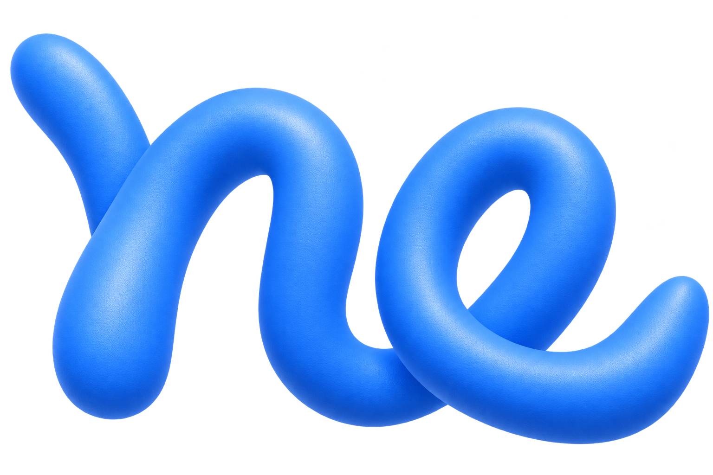

HELLO,I’M MAT.
SCROLL TO EXPLORE ↓A WORK IN PROGRESS, JUST LIKE ME.
01 / THINGS I MAKE想法，动起来。
GOOD STUFF.
一些创作，一些探索。
把脑袋里的「万一呢」，变成眼前的「就是它」。
SMALL STEPS. REAL THINGS.更多探索，在 GitHub
02 / THE HUMAN BEHIND THE SCREENHI AGAIN, I’M MAT11-OO.
A LITTLE
ABOUT
ME.
✳ 一个持续更新中的自己
不被定义，
不被定义，
一直好奇。
比起急着给自己贴上标签，我更想亲手试试：把一个想法做出来，把一个问题想明白，再去发现下一个有意思的东西。
这里是我的个人空间。放作品，写想法，也给那些还没成形的灵感留个位置。慢慢探索，认真玩。
Less overthinking. More making.↴
03 / NOTES FROM MY HEAD不定期，随便写写。
MIND POPS.
有时候，想法需要一个出口。
不必完整，先记下来再说。
HAVE A GOOD IDEA? OR JUST A HELLO?THE INTERNET IS BETTER WITH FRIENDS.